fal call center · Adobe MAX · build manual for 3 booths + 1 spare
Call Center Booth Manual
How to turn a beige wall phone, a Raspberry Pi, a small screen and a receipt printer into a booth where a visitor lifts the handset, says what they want to see, waits on hold to elevator music, and watches the video arrive. Written for someone who has never soldered.
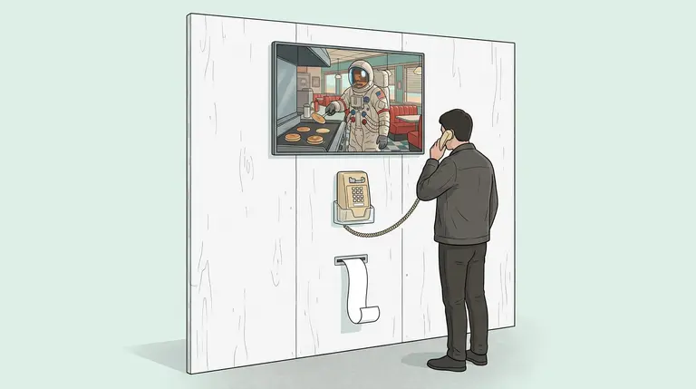
The finished booth: the phone at chest height, the screen above it, the receipt slot below. Everything else hides behind the wall.
How to read this manual
Every step has a Why note (the reason we do it this way) and, where it matters, a Why not note (the other options we considered and rejected). Yellow-bordered Checkpoint boxes are tests you must pass before moving on. If a checkpoint fails, stop there. Fixing a problem is easy now and hard once everything is screwed into a wall.
Part 1
How the booth works
Read time: 5 minutes. No tools.
Before touching anything, it helps to know what each piece does. There are only five boxes and they talk in one direction.
Lift the handset. The hook switch opens. The Pico (a coin-sized computer inside the phone) notices and "types" the key F8 into the Raspberry Pi, exactly as if someone pressed it on a keyboard.
The web page hears F8 and plays "Please leave your prompt after the beep" through the USB audio adapter, which is wired to the handset's earpiece.
The visitor speaks. The handset microphone goes back through the same adapter. The page records it, sends it to fal to turn speech into text, then asks fal's video model (H3 Max) for a 10-second clip.
While it renders, the page plays "Please hold while I connect you to our fastest agent" and elevator music. The clip appears on the monitor in about 10 seconds.
Keypad presses (2 for sound, 3 to regenerate, 0 to print) are also typed by the Pico. Hanging up types F9.
Why it's built this way
Nothing time-sensitive crosses the Wi-Fi. Sound, keypad and screen all live inside the booth. Only small requests go out to fal. Bad conference Wi-Fi makes a video arrive a little later; it never makes the call break up.
The phone becomes a keyboard and a headset. Computers already understand both, with no special drivers, so there's very little that can go wrong.
The software is a web page hosted on Vercel. Fix a typo once and all three booths get it on their next reload.
Why not
A real phone line (a Grandstream HT801 + a phone number). The voice call itself would travel over the venue internet. Conference Wi-Fi drops data in bursts, which means choppy, one-way or dropped calls. It also can't drive a web page.
A tablet instead of a Pi and monitor. iPads keep asking for microphone permission and drop USB accessories. A Pi boots straight into the page with no prompts.
An off-the-shelf USB phone. Office USB phones talk to Teams and Zoom, not to a web page, and look like office gear. We keep your landline's look.
Part 2
Ground rules and safety
Read time: 2 minutes.
Never plug the phone into a real phone jack, and never plug its straight cord into anything. A phone line carries up to about 90 volts when it rings. We don't use it at all.
The soldering iron tip is about 350 °C (660 °F). Always put it back in its stand. Work near an open window or a fan; the smoke from the flux irritates your eyes and lungs.
Wash your hands after soldering, especially with leaded solder, and before eating.
Keep the bare Raspberry Pi off metal. The phone's chassis is steel. A Pi touching it, or a loose screw under it, can short-circuit and die. Put the Pi in its case first.
Unplug power before changing wires. Nothing here is dangerous to you (it's all 5 volts or less), but connecting wires while powered can damage the boards.
Why these rules
Every item in this build runs on 5 volts from USB, which can't hurt you. The only hazards are heat (the iron), fumes (the flux) and the phone line, which we never connect. The Pi rule protects the hardware: it's the most expensive part and the one people kill most often by setting it down on something metal.
Part 3
Parts and tools
Unboxing and checking: 15 minutes.
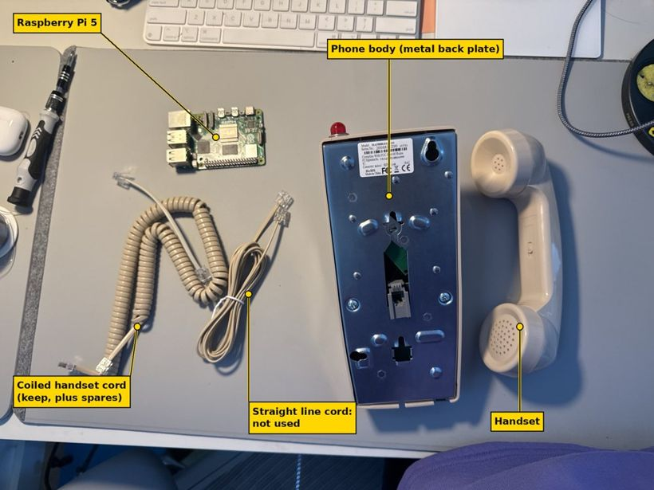
The phone as it comes out of the box, plus the Raspberry Pi. The straight cord is the phone-line cord; we never use it.
Per booth (buy 4 of each: 3 booths + 1 spare)
Part
What it does
Why this one
Beige wall phone (HA9888-style, Sangyn listing)
The thing people touch
Screws to the wall so it can't be knocked over or carried off; keypad and hook switch plug in with small connectors, so no cutting inside.
Raspberry Pi 5 (4 GB) + official 27 W power supply + official case
The booth's computer
Cheap, silent, boots in seconds, runs Chromium well. The official power supply matters: cheap ones cause random reboots.
2 × SanDisk Extreme 64 GB microSD
The Pi's "hard drive"
Fast and reliable. The second card is a ready-to-swap spare.
Raspberry Pi Pico (pre-soldered pins) + USB cable
Turns the hook and keypad into key presses
Shows up as a normal keyboard on any computer. Pre-soldered pins mean you can test with clip-on wires.
Sabrent AU-MMSA USB audio adapter
Connects the handset to the Pi
Separate headphone and mic jacks (no guessing about 4-pin plugs), and needs no driver on Linux.
2 × 3.5 mm pigtail cables
A plug on one end, bare wires on the other
Lets you solder the handset wires to a plug without touching the adapter.
Micro-HDMI to HDMI cable
Pi to monitor
The Pi 5 only has micro-HDMI ports.
Monitor (27", VESA mount)
Shows the video
VESA holes let you hang it on the wall and hang the Pi on its back.
Spare coiled handset cord
Replacement
The most-yanked part. A swap takes 10 seconds because we keep the cord's plug.
2 × USB extension cables (6 ft)
Phone to Pi, through the wall
The phone and Pi are on opposite sides of the wall.
Shared by all booths
GL.iNet travel router (Beryl AX or Beryl 7) ×2, 8-port switch, Ethernet cables, a 5G hotspot or a phone with a data plan, two battery backups (APC 600 VA), power strips.
80 mm receipt printer per booth (Epson TM-T20III renewed, or Rongta RP326), plus a case of 80 mm thermal paper.
Tools
Multimeter with a continuity beep (Klein MM325 or similar).
Soldering station (X-Tronic 3020-XTS) with its helping hands, 0.8 mm rosin-core solder, a flux pen, desoldering braid.
Fine wire strippers, flush cutters, heat-shrink tubing and a heat gun or hair dryer, 26 AWG hookup wire in several colours, female-to-female jumper wires, masking tape and a marker, small screwdrivers.
Why not
A Raspberry Pi 4 or older. Slower at playing video and running the browser; the price difference is small.
A USB audio adapter with one 4-pin jack (like Apple's). Which ring is the mic depends on the brand. Separate jacks remove that guesswork.
An Arduino instead of the Pico. Most Arduinos can't act as a USB keyboard; the ones that can cost more and are harder to set up.
Part 4
Three skills: meter, solder, shrink
Practice: one evening. Do this on scrap wire or an old gadget first.
4a · The multimeter
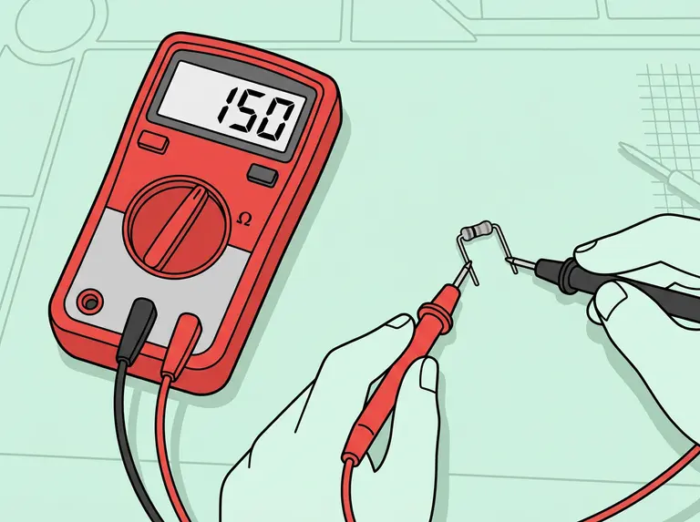
A multimeter measures electricity. We only use three settings of the dial.
Dial setting
Symbol
What it tells you
Where we use it
Resistance, 2k range
Ω
How hard it is for electricity to pass, in ohms
Finding the earpiece wires (they read about 100–300 Ω)
Continuity
a speaker or sound-wave symbol, often shared with ▶|
Beeps when two points are connected
Hook switch and keypad
Diode
▶|
Whether current flows one way only
Checking whether the red light is an LED
Plug the black probe into the socket marked COM and the red probe into the socket marked VΩ (or similar). Leave them there for this whole project.
Turn the dial to continuity and touch the two probe tips together. It should beep. Now you know the meter works.
To test something, touch one probe to each point. On continuity, a beep means "connected". On Ω, read the number.
Why a meter at all
Phone makers use different wire colours and pin orders. Guessing means soldering the wrong wires together. The meter tells you the truth in seconds, and it's how you check every joint afterwards.
4b · Soldering
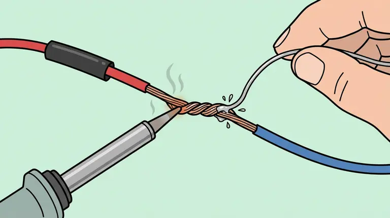
Heat the joint with the iron, feed solder into the other side, and let it flow in. Slide the heat-shrink on first, well away from the heat.
Set the station to 330–350 °C (626–662 °F) for leaded solder (about 370 °C (698 °F) for lead-free). Wet the sponge.
Tin the tip: wipe it on the sponge, then melt a little solder onto it so it shines.
Tin both wires: strip 5 mm of insulation, twist the strands, heat them for a second and touch solder to them so it soaks in.
Join: hold the two tinned wires together in the helping hands, touch the iron to both for 1–2 seconds, add a little solder, then lift the solder away, then the iron.
Don't move anything for 3 seconds while it cools.
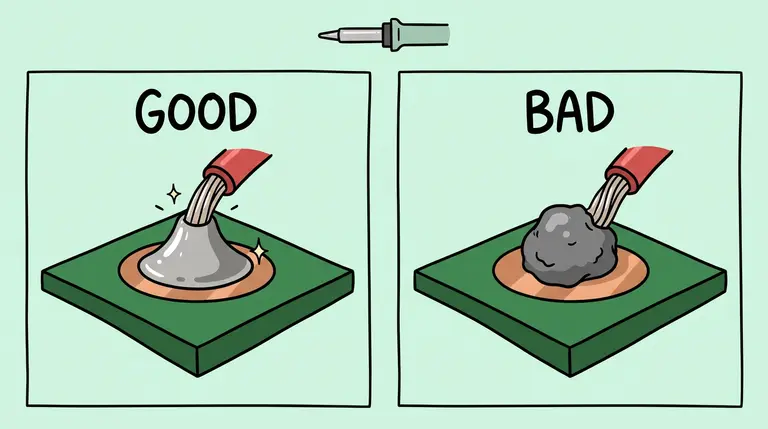
Good: shiny and shaped like a small volcano. Bad: a dull ball sitting on top. A bad joint means it wasn't hot enough or moved while cooling; reheat it.
Why solder (and not tape or twist)
A twisted or taped connection loosens with every handset lift. Thousands of visitors will pull on these wires. A soldered joint is a single piece of metal and doesn't loosen.
Why not crimp connectors or screw terminals
The phone's handset wires are very thin. Crimps sized for them need a special tool, and screw terminals chew thin wire. Soldering is the reliable option at this size.
4c · Heat-shrink tubing
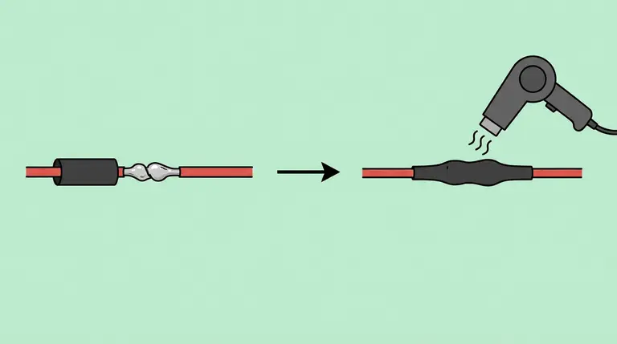
Slide the tube over the finished joint and heat it until it shrinks tight.
Why
It insulates the bare metal so two joints can't touch each other (a "short"), and it stiffens the joint so it doesn't snap when bent. Always slide the tube onto the wire before you solder; you can't add it afterwards.
Checkpoint · skills
Make 5 wire-to-wire joints in a row that look shiny and survive a firm tug. Then you're ready for the phone.
Part 5
Open the phone and label everything
About 20 minutes.
Lay the phone face-down on a towel. Remove the screws from the metal back plate and lift the beige front shell away. Go slowly: the red light in the shell is still wired to the inside.
Find each cable in the photo below. Put a strip of masking tape on each one and write its name: HANDSET, KEYPAD, HOOK, LIGHT, BELL, LINE.
Take a clear photo of the board with all its plugs still in place. This is your undo button.
Unplug every connector from the main green board. Pull on the white plastic plug, never on the wires.
Remove the board's 2 screws, put the board in a zip bag and write the phone's number on it.
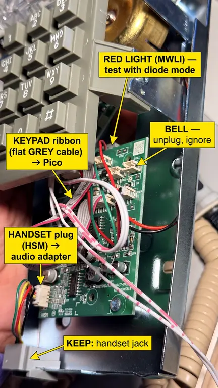
What each connector is, labeled on your own photo. The two look-alike striped cords are LINE (to the back jack), not the light. For the small plugs, trust the names printed on the board.
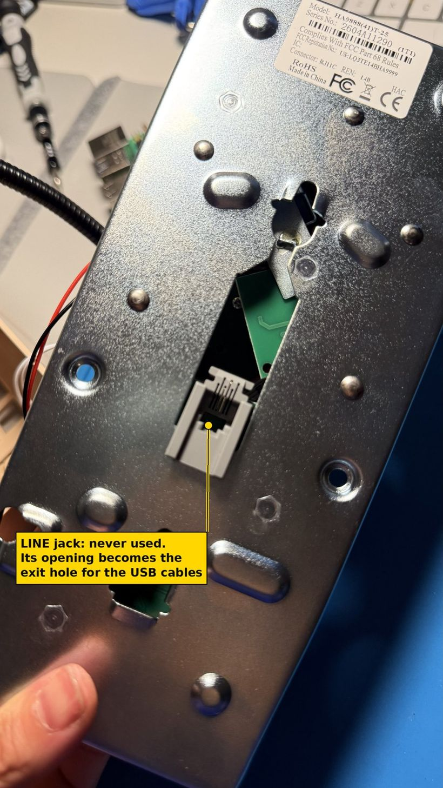
The jack on the back is the phone LINE. We never connect it. Its hole is where our cables will leave the phone.
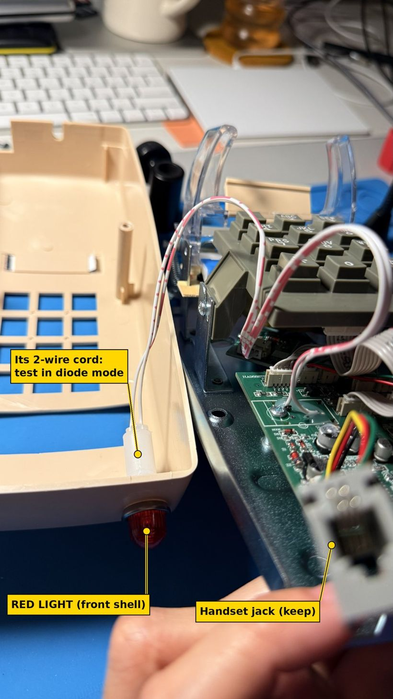
The red light lives in the front shell. Two red-striped cords look alike: the one to the red lens is LIGHT; the one to the back jack is LINE.
Cable
Board label
Keep or ignore
Handset jack (4 wires: green, red, yellow, black)
HSM
Keep → audio adapter
Keypad (flat grey ribbon with a red edge)
its own small board
Keep → Pico
Hook switch (ribbon from the tan board in the cradle)
PX2
Keep → Pico
Red light (2-wire cord)
MWLI
Optional → Pico
Bell (red and black wires)
BELL
Ignore
Line jack (back plate)
(line)
Ignore
Why remove the whole board
Everything we need already unplugs from it. Taking it out means no cutting of circuit-board tracks and no risk that the old electronics interfere with our signals. Bagging it means the phone can be restored later.
Why not keep the phone's own electronics
The board is designed to talk to a phone line: it needs line voltage to power it and turns keypad presses into tones. We want simple on/off signals, which is exactly what the bare switches give us.
Part 6
Wire the handset to the audio adapter
About 45 minutes the first time.
6a · Identify the four handset wires
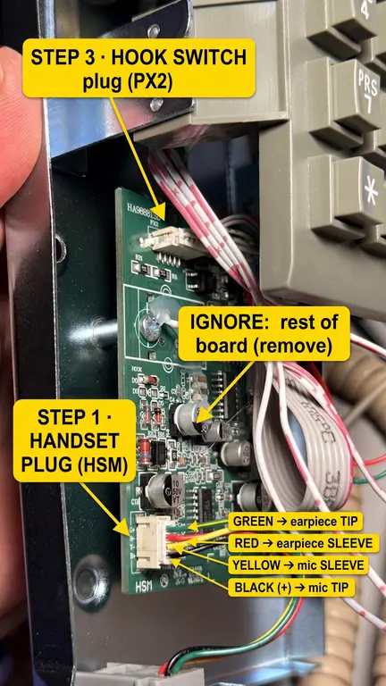
The board prints the four pins as G+ R− Y− B+: green and red are the earpiece, black (+) and yellow (−) are the microphone.
Plug the handset into its jack so the cord is connected.
Meter on Ω, 2k. Touch the probes into the white HSM plug on the green and red contacts. Expect 100–300 Ω. That's the earpiece.
Now black and yellow. Read the number, swap the probes, read again. The two numbers should be different. That means it's an electret microphone, the kind the adapter can power.
Checkpoint · handset
Green–red reads 100–300 Ω, and black–yellow reads differently each way round. If green–red doesn't read 100–300 Ω, stop and recheck before cutting anything.
Why test before cutting
Cutting is the one step you can't undo. Thirty seconds with the meter means you never solder the earpiece to the mic jack.
6b · Know your 3.5 mm plug
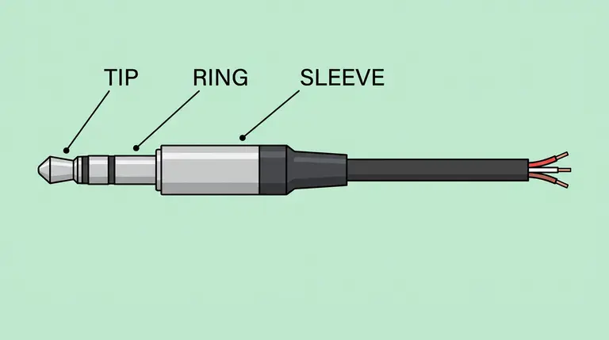
A headphone plug has three metal contacts: tip (the point), ring (the middle band) and sleeve (the last metal section before the plastic handle). The sleeve is always ground.
Each pigtail has three bare wires. Their colours vary by brand, so find out which is which with the meter: continuity mode, one probe on a bare wire, the other touching the tip of the plug. The beep tells you which wire is the tip. Repeat for ring and sleeve.
Write it on tape on each pigtail, for example "red = tip, white = ring, copper = sleeve".
6c · Solder
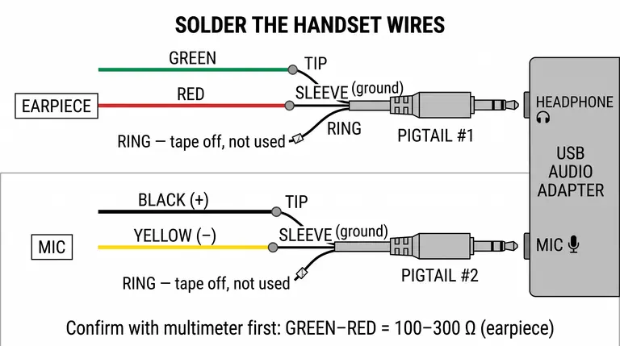
The whole handset in one picture. Ring wires are taped off, not connected.
Cut the white HSM plug off, about 1 cm from the plug. Strip 5 mm from each of the four wires.
Slide heat-shrink onto each wire.
Earpiece pigtail (#1): solder green → tip, red → sleeve. Tape off its ring wire.
Microphone pigtail (#2): solder black → tip, yellow → sleeve. Tape off its ring wire.
Shrink the tubing. Label the plugs EAR and MIC.
Plug EAR into the adapter's headphone jack (pink or headphone icon) and MIC into the mic jack (green or mic icon).
Checkpoint · audio
Plug the adapter into a laptop. Open a voice recorder, talk into the handset, then play it back with the handset at your ear. You should hear yourself clearly. Mic silent? Swap black and yellow. Earpiece silent? Recheck green and red.
Why tip for the earpiece and not tip + ring
Tip is the left channel, ring the right. Joining them ties the adapter's two outputs together, which can distort the sound or stress the adapter. One channel is plenty for a single earpiece.
Why not cut the coiled cord instead
We solder at the phone's own jack and keep the cord's plug. When a visitor yanks the cord out of shape, you swap in a spare cord in 10 seconds instead of re-soldering on the show floor.
Part 7
Find the hook switch
About 15 minutes.
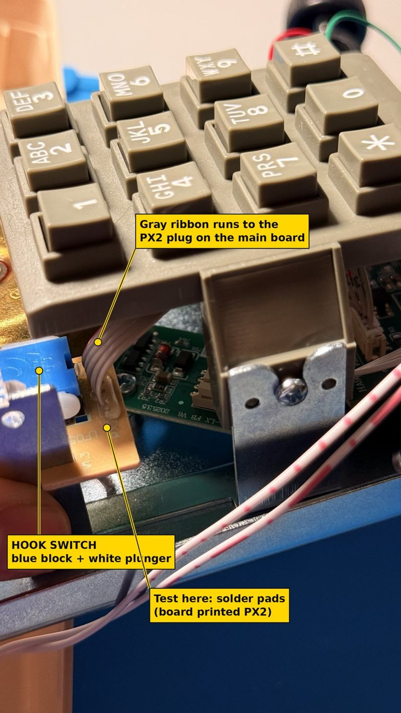
The hook switch: a blue block whose white plunger is pressed when the handset hangs on the cradle.
Meter on continuity.
Touch the probes to two of the solder pads where the ribbon joins the tan board.
Press the white plunger in with a finger (that's "hung up"), then let go (that's "lifted").
Try pairs of pads until you find a pair that beeps in one position only. There may be two such pairs. Either works; pick one.
Write down which two pads (count from one edge) and whether it beeps pressed or released.
Measured on the HA9888 wall phone
The first two pads, counting from the edge nearest the phone's left side, beep when the plunger is released (handset lifted). Use those two pads on every unit. The Pico code is already set for this: the switch closes on lift, pulling GP15 to ground, so OFF_HOOK_READS_HIGH = False. Still check each unit with the meter, because a different batch could be wired differently.
Record for each phone
Your answer
Hook pads (counted from the edge)
pad __ and pad __
Beeps when the plunger is…
pressed / released
Why only two wires
A switch is just two metal contacts that touch or don't. The Pico only needs to know which, so it needs only the two contacts that change. Extra contacts are for the old phone circuit.
Part 8
Map the keypad
About 30 minutes.
Twelve buttons, but only about seven wires. That's because the keypad is a grid: four row wires and three column wires. Pressing a button connects one row to one column.
Unplug the grey keypad ribbon from the main board (if you haven't). No unscrewing needed: hold the white plastic plug and wiggle it straight off the board's pins. Leave the keypad and its small board screwed into the front shell. Count the ribbon's wires and number them 1, 2, 3… starting from the wire with the red stripe.
Meter on continuity. Hold down key 1 and touch the probes to pairs of contacts in the ribbon's plug until it beeps. Write down the two wire numbers. If the plug's contacts are too small to reach, probe the solder pads where the ribbon joins the keypad's own small board instead: same wires, bigger targets.
Repeat for keys 2, 3, 4, 7, *, #. These seven keys are enough to work out every row and column.
Key held
Wires that beep
So it's…
1
__ and __
R1 + C1
2
__ and __
R1 + C2
3
__ and __
R1 + C3
4
__ and __
R2 + C1
7
__ and __
R3 + C1
*
__ and __
R4 + C1
#
__ and __
R4 + C3
How to read it: the wire that appears for 1, 2 and 3 is R1. The wire shared by 1, 4, 7 and * is C1. Keep going and every wire gets a name.
Tip for probing tiny plugs: tape a sewing pin to each probe and touch the pin to the metal contact inside each slot.
No pair beeps? That's common, and you can skip this table.
Many phone keypads press a carbon pad onto the board instead of closing a metal switch. A pressed carbon key reads a few hundred to a few thousand ohms, which is too much for the meter's beeper, so nothing beeps even though the key works. Two things to try, five minutes each:
Switch the meter from the beep to Ω on the 20k range. Hold the key down firmly and watch for the reading to drop from "1" (open) to any number. That pair is the answer.
Probe the solder pads where the ribbon joins the keypad's small board, not the tiny plug.
Still nothing? Move on. The map matters, because the booth must know which button is 2, 3 and 0. But the meter is only one way to find it. The Pico can find it by itself and is far more sensitive than the beeper: wire the ribbon in order in Part 10, then let the key finder (10c) type out the answer.
Why a grid
Twelve separate switches would need 13 wires. A grid needs 7. The Pico scans the grid many times a second ("is row 1 touching column 1? column 2?…") and works out which key is down.
Part 9
The red light (optional)
5 minutes to test.
Meter on diode (▶|). On most meters this is the same dial position as continuity: turn to the spot with the ▶| and speaker symbols, then press SELECT (or FUNC) until the screen shows ▶| instead of the speaker. The difference: continuity just beeps, while diode mode shows a number. Touch the probes to the two contacts of the LIGHT cord's plug, then swap them.
It glows faintly, or reads about 1.6–2.0 V one way round: it's an LED. Later the Pico can blink it while a video renders.
Nothing either way: it's probably a neon bulb that needs high voltage. Skip it.
Why bother
A blinking red light is a strong "something is happening" signal for people walking past. It's a bonus, not a requirement; the booth works without it.
Part 10
Set up and wire the Pico
10 minutes of setup, 30 minutes of wiring.
10a · Give it its program
Hold the white BOOTSEL button on the Pico while plugging its USB cable into your laptop. A drive called RPI-RP2 appears.
From circuitpython.org, download the latest stable .uf2 file for the board "Pico" by Raspberry Pi and drag it onto RPI-RP2. The drive restarts as CIRCUITPY.
From circuitpython.org/libraries, download the bundle that matches that version. Copy its lib/adafruit_hid folder into CIRCUITPY/lib/.
Copy booth/pico/code.py from the project (GitHub: lizzieoh/hello-world, branch claude/landline-demo-booth-setup-05lxch) onto CIRCUITPY.
Why CircuitPython
The program is a plain text file you can open and edit on the drive itself. Change a setting, save, and the Pico restarts with it. No special software to install.
10b · Wire it
Hold the Pico with the USB plug pointing up and the components facing you. The pins are numbered from 1 at the top-left, down the left side to 20.
Keypad: the ribbon usually reaches the Pico by itself, since the Pico sits where the main board was. If it does, solder each ribbon wire straight onto its Pico pin: cut the white plug off, peel the wires apart about 3 cm (1¼ in), strip 3 mm (⅛ in) of each, tin it, wrap it once round the pin and solder (iron at about 350°C / 660°F, because the pins soak up heat). Only if a wire falls short, extend it with 26 AWG wire about 10–15 cm (4–6 in) long, with heat-shrink over the joint. Either way, connect them in ribbon order, starting from the red stripe: wire 1 → GP0 (pin 1), 2 → GP1 (pin 2), 3 → GP2 (pin 4), 4 → GP3 (pin 5), 5 → GP4 (pin 6), 6 → GP5 (pin 7), 7 → GP6 (pin 9). If the ribbon has more wires, keep going: 8 → GP7 (pin 10), 9 → GP8 (pin 11), 10 → GP9 (pin 12). You don't need to know which wire is a row and which is a column. The key finder in 10c works that out.
Hook: leave the hot glue on the tan board alone. It's there to protect those joints. Use the grey ribbon instead: it already carries the two pads' signals to the PX2 plug. Cut the ribbon about 2 cm (¾ in) before the PX2 plug, peel off the first two wires on the same edge as the pads you measured, and strip them. Check them with the meter: they should beep only when the plunger is released, exactly like the pads did. Solder (or extend) them to GP15 (pin 20) and GND (pin 18). Either wire can go to either pin, and the other ribbon wires stay unused. (Or push male jumper pins into the PX2 plug's first two slots, like the keypad tip below.)
Use a different colour for each wire and write the colour list on tape inside the phone.
Faster: wiring with no soldering
Plug jumpers straight into the keypad's own plug (try this first, 2 minutes). Push the metal pin of a male-to-female jumper wire into one slot of the keypad ribbon's white plug. If it goes in snugly and stays put, do all of them: the male end goes in the plug, the female end on the Pico pin. That's the whole keypad wired in about 5 minutes, with no cutting or soldering. A dab of hot glue over the plug keeps the pins in for the show.
If the pins are loose: use a Pico screw-terminal breakout board (search Amazon for "Raspberry Pi Pico screw terminal breakout"). The Pico plugs into it; you cut the ribbon's plug off, strip each wire about 5 mm (³⁄₁₆ in), push it into a terminal and tighten the screw. No soldering, and wires can be moved in seconds.
Hook switch: the same two options work on its PX2 plug. Otherwise it's only 2 solder joints.
Assembly line for the 4 phones: do the same step on all four before moving on. Use the same wire colours in the same order on every phone, and run the key finder (10c) on phone 1 only. If the other phones are the same model, its two lines work for all of them: copy the same code.py and just press every key to check.
10c · Let the Pico map the keypad (the key finder)
Also copy booth/pico/keyfinder.py onto CIRCUITPY, next to code.py. Only the keypad needs to be wired for this. The hook switch can wait.
Open code.py on CIRCUITPY in a text editor. Change FIND_KEYS = False to FIND_KEYS = True and save. The Pico restarts by itself.
Open a new empty text document (TextEdit or Notes) and click into it. The Pico starts typing into it: "Hold 1 …". Hold each key it asks for until it types the wires and moves to the next key.
At the end it types two lines starting with ROW_PINS = and COL_PINS =. In code.py, replace the two lines with the same names with them, and set FIND_KEYS = False again. Save.
Why this works when the meter didn't
The Pico tests every pair of wires itself, hundreds of times a second, and notices a connection even through a carbon pad's few thousand ohms. It also does the row-and-column puzzle for you. If it types "Not a simple grid", send the typed list to Claude.
Checkpoint · Pico
Plug the Pico into your laptop and open any text editor. Lift the handset: the Pico's small LED lights. Hang up: it goes out. With the handset lifted, press every key; each one types its own character. Keys are ignored while the phone is hung up, so if the hook isn't wired yet, join pin 20 and pin 18 with a jumper wire: the Pico then thinks the handset is lifted (the hook itself types F8 and F9, which you won't see in a text editor). If the LED is lit with the handset down, open code.py and flip OFF_HOOK_READS_HIGH (it's set to False for this phone). If a digit comes out wrong, fix the LAYOUT list in code.py rather than re-soldering.
Why the Pico types keys
Every computer understands a keyboard. The Pi doesn't need any driver or setup; the web page just listens for F8, F9 and digits. If anything goes wrong you can test the whole booth with a normal keyboard.
Why not wire the switches straight to the Pi's pins
It's possible, but then you need custom software on the Pi to read the pins and pass them to the browser, and the Pi's pins are easy to damage. The Pico costs a few dollars, plugs in by USB, and keeps the phone and the computer independent: you can swap either one in seconds.
Part 11
Set up the Raspberry Pi
About 45 minutes, mostly waiting.
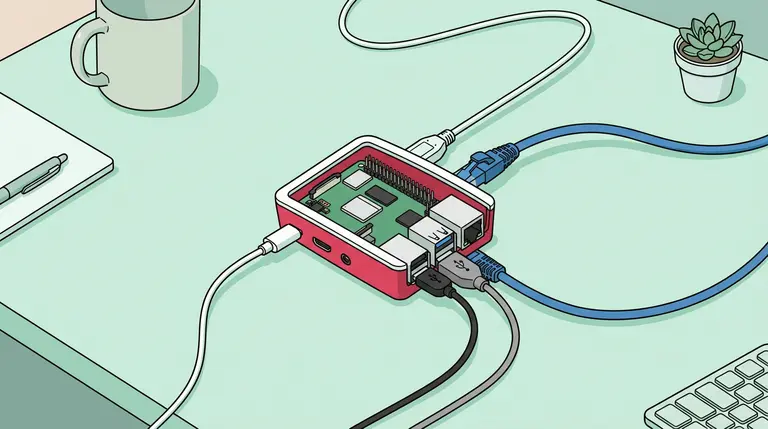
The Pi in its official case, with power, monitor, network and USB connected.
11a · Case first
Push the case fan's small connector onto the 4-pin FAN header on the Pi (labelled on the board), seat the Pi in the case and snap the lid on.
Why
The fan keeps the Pi from slowing down when it's playing video all day, and the case protects it from shorts against metal.
11b · Write the SD card (on your laptop)
Install Raspberry Pi Imager from raspberrypi.com/software and put a microSD card in the card reader.
Choose Device: Raspberry Pi 5 · OS: Raspberry Pi OS (64-bit), the one with desktop · Storage: your card.
Click Edit settings: hostname fal-booth-1, username booth with a password you'll remember, your Wi-Fi for now, and on the Services tab enable SSH.
Click Write and wait about 10 minutes.
Why not "Lite" (no desktop)
The booth needs a screen with a browser. The desktop version includes everything for that; Lite would mean installing it all by hand.
11c · First boot and booth setup
Put the card in the Pi. Connect the monitor to HDMI 0, the micro-HDMI port right next to the USB-C power port. Connect a keyboard, Ethernet, the USB audio adapter and the Pico. Plug in power last.
When the desktop appears, open Terminal (the black icon at the top) and type these lines one at a time, pressing Enter after each:
The 1 is the booth number. Use 2, 3 or 4 on the other Pis.
What setup.sh does, and why
Starts the booth page full-screen at power-on, so nobody has to touch a mouse at the venue.
Allows the microphone without asking and lets sound play without a click. A permission pop-up would block the whole booth.
Prints silently to the receipt printer, with no print dialog.
Turns off screen blanking so the monitor never goes to sleep.
Sends all sound to the handset every time it starts, so a replugged adapter still works.
Restarts the browser if it ever closes, and shows a quiet "connecting…" screen until the internet is up.
Checkpoint · Pi
After the reboot, the Pi goes straight to a black "connecting…" screen, then the booth page: "Pick up the phone." Lift the handset: you hear "Please leave your prompt after the beep." Speak, wait, and the video appears.
Run cat ~/booth/audio.log. It should name a USB device. If not, reseat the adapter.
Portrait monitor
Set ROTATE="left" or "right" in booth.conf.
Need the desktop for maintenance
From a laptop: ssh booth@fal-booth-1.local, then pkill -f kiosk.sh; pkill chromium.
11e · Recommended: the native app (no browser)
Instead of the booth web page, the Pi can run the call as its own program. The call is the same: greeting, hold music, muted video, 2 · 3 · 0. Only what runs it changes. To switch, run this in Terminal instead of setup.sh (or after it; the last one you run wins):
cd ~/hello-world/booth/native
./setup-native.sh 1
sudo reboot
It asks for the fal API key once (the letters don't show while you paste; that's normal), then runs a one-minute self-test. It should end with 13/13 passed.
Why native is more robust
The phone can't lose focus. The app reads the Pico directly. In a browser, keys only arrive while its window is in front, and one stray pop-up stops the booth.
The printer needs no driver. It sends the receipt straight to the printer, so Part 12's driver install isn't needed.
The screen between calls works with no Wi-Fi. The last 12 videos are saved on the Pi and keep looping even if the network drops.
It heals itself. If the app ever stops, it's back in 2 seconds. If the video player crashes mid-call, the app reopens it and puts the video back.
A staff light. A small dot at the top left is green when fal is reachable and red when the network is down, so you know whether to check the router.
Why keep the browser version
It's the same call, already tested, and anyone with the link can open it on a laptop. If the native app ever misbehaves at the show, cd ~/hello-world/booth/pi && ./setup.sh 1 && sudo reboot switches back in two minutes.
Checkpoint · native
After the reboot: a dark screen that says "Pick up the phone." with a green dot at the top left. Lift the handset and you hear a ring, a click, then "Please leave your prompt after the beep." Settings live in ~/hello-world/booth/native/native.conf (clip length, H3 Max or FLUX first, line number). After a change, hold * for 3 seconds to restart the app.
Why not a Mac mini
A Mac mini would also work, but costs about ten times as much per booth, is harder to lock into a single full-screen app, and loses its settings when updates run. The Pi does this one job reliably.
Part 12
Connect the receipt printer
About 30 minutes. Test this early: it's the step most likely to need help.
Pressing 0 prints a receipt: the prompt, three black-and-white stills from the video and the time. The receipt is laid out for 80 mm paper.
Using the native app (Part 11e)? Skip the driver.
Load the paper, plug the printer into the Pi, make a call and press 0. The receipt prints straight away. If the screen says "Printer offline", replug the printer's USB cable and press 0 again. Steps 2 to 4 below are only for the browser version.
12a · Rongta 80 mm (the one we bought): test it on its own
Paper: open the lid and drop the roll in so the paper comes off the bottom of the roll toward you. Pull out about 5 cm (2 in) and close the lid firmly until it clicks. The auto-cutter trims the end.
The printer's own self-test: with the printer off, hold the FEED button, switch it on, and let go once it starts printing. It prints its settings page. That proves the printer, paper and cutter work before the Pi is involved.
Plug it into the Pi by USB (the square USB-B port on the back). Don't use the port that looks like a phone jack: that's for a cash drawer. With phone cords all over the bench, it's an easy mix-up.
Test print from the Pi. In Terminal:
cd ~/hello-world && git pull
ls /dev/usb/
cd booth/native
sudo apt install -y python3-numpy python3-pil ffmpeg
sudo python3 booth.py --test-print
ls /dev/usb/ should show lp0, which is the printer. The last line prints a receipt with a striped test pattern and cuts it. sudo is only for this test: the native app's setup gives the booth permission to print without it.
No Pi yet? Test it from the Mac
Plug the printer into the Mac. In Terminal, lpinfo -v | grep usb lists it as a line starting usb://. Copy that address, then run sudo lpadmin -p rongta -E -v 'usb://…paste…' -m raw. Then, from hello-world/booth/native: BOOTH_PRINTER=rongta python3 booth.py --test-print. The same BOOTH_PRINTER=rongta in front of the laptop test (laptop.py) makes 0 print for real.
If ls /dev/usb/ shows nothing
Check the printer is switched on, then replug its USB cable and run it again. If it's still empty, run lsusb and send Claude what it lists. Some Rongta units show up as a different kind of USB device, and that's a one-line setting change.
Load an 80 mm paper roll (thermal side facing out, the side that scratches dark with a fingernail) and connect the printer to the Pi by USB.
On the Pi, open Terminal and install the print system and a free driver for 80 mm receipt printers:
sudo apt install -y cups libcups2-dev libcupsimage2-dev cmake git
sudo usermod -aG lpadmin booth
git clone https://github.com/klirichek/zj-58.git
cd zj-58 && mkdir build && cd build && cmake .. && make && sudo make install
Open the browser at http://localhost:631, go to Administration → Add Printer, pick your USB printer, and for the model choose the 80 mm option the driver offers.
On the printer's page, choose Set As Server Default.
Make a call, press 0. A receipt should print without any dialog.
If this doesn't work
Switch the Pi to the native app (Part 11e). It prints straight to the printer without any driver. Nothing else in the booth changes.
Why an 80 mm receipt printer
The receipt design is exactly 576 dots wide, the printing width of standard 80 mm receipt paper. Receipt printers are built to run all day in shops, cut automatically, and the paper is sold everywhere.
Why not
Epson's official driver: it only exists for regular PCs, not the Pi's ARM processor.
A Star TSP143: it speaks Star's own language, which the free driver and the fallback can't use.
A 4×6 label printer or a colour photo printer: a different paper size from the receipt design. A colour printer like the Canon Selphy also takes about 41 seconds per print.
Part 13
The booth network
About 30 minutes at home, 10 at the venue.
Plug in the router. On a laptop, join its Wi-Fi and open 192.168.8.1. Set an admin password.
Internet → Repeater: join your home Wi-Fi for now. At the venue you'll change only this one setting to the show's network.
Internet → Tethering: plug in the hotspot or phone by USB. Turn on Multi-WAN with Repeater first and Tethering second.
Router → switch → each Pi, all by Ethernet.
On each Pi, switch its own Wi-Fi off so it can't wander onto the busy hall network: sudo nmcli radio wifi off.
Save a backup of the router's settings and load it onto the spare router.
Why your own router
Conference Wi-Fi is crowded and changes. With your own router, you set up everything at home and change one setting at the venue, instead of three Pis. If the venue Wi-Fi drops, the router switches to the hotspot by itself.
Why not Wi-Fi on each Pi
A crowded hall has hundreds of phones fighting for the same airwaves. A cable doesn't. Ethernet is the single biggest reliability win in the whole build.
Ask the venue first
Many convention centres ban exhibitors from running their own Wi-Fi network or hotspot. Ask Adobe in writing. If it's banned, turn off the router's own Wi-Fi (repeater mode still works) and ask whether the backup hotspot is allowed.
Part 14
Mount it in the booth wall
About an hour per booth, once the wall is built.
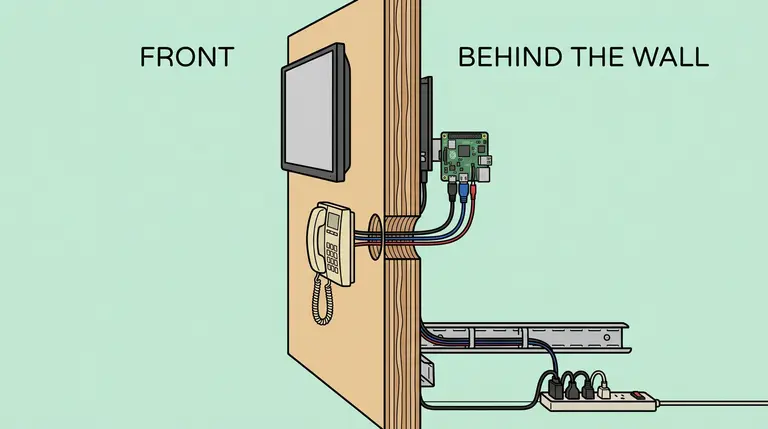
Visitors see only the phone, the screen and the receipt slot. The Pi, Pico, cables and power live behind the wall.
Wall: use plywood or MDF at least 12 mm (½") thick. Mark the phone at chest height (about 120 cm / 47" to the top of the phone) and the monitor's bottom edge about 15 cm above it.
Cable hole: drill a 25 mm (1") hole behind where the phone's LINE jack opening will sit. Both USB cables pass through it.
Phone: screw the phone's metal back plate to the wall through its keyhole slots with wood screws. Tuck the Pico and audio adapter inside the phone body, held with hot glue, and zip-tie the cables inside so a pull on the outside doesn't reach the solder joints.
Monitor: hang it on the VESA wall mount. Screw the Pi's VESA plate to the back of the monitor.
Printer: mount it behind the wall with only its paper slot showing through a cut-out below the phone.
Power: monitors and printers to the power strip; the Pis and the network gear to the battery backups. Plug the battery backups straight into the wall.
Why hide everything
Anything a visitor can reach, a visitor will touch, unplug or lean on. Hidden cables can't be tripped over, and a wall-mounted phone can't be knocked off a table or walked away with.
Why not adhesive strips or a fabric wall
A handset gets lifted and slammed thousands of times a day. Adhesive creeps and fabric walls flex. Screws into wood hold.
Part 15
Make units 2, 3 and the spare
Phones: about an hour each. Pis: 20 minutes each.
Phones: repeat Parts 5–10 for each phone. Because they're the same model, the wire colours and pins should match. Still run every checkpoint.
Pis: shut down Pi #1, then copy its SD card onto three more cards (Raspberry Pi Imager, or "SD Card Copier" on another Pi). On each copy, change the name and line number: run sudo raspi-config nonint do_hostname fal-booth-2, edit ~/booth/booth.conf so the address ends in line=2, and reboot.
Spare cards: make a second copy for each Pi and tape it inside that Pi's case.
Label everything 1, 2, 3 or S: phone, Pi, SD cards, power supplies and both ends of every cable.
Why copy instead of setting up each Pi
Copies are identical, so if Line 1 works, Lines 2 and 3 work the same way. It's also how you recover on show day: swap in the spare card and you're back in two minutes.
To change settings later: sudo raspi-config nonint do_overlayfs 1, reboot, make the change, lock it again.
Why
At a trade show, someone will pull a power cord. A read-only card can't be corrupted by that, and every boot is identical to the last.
16b · The burn-in checklist (all three booths on one router)
50 full calls per phone: lift, speak, video, press 2, press 3, press 0, hang up.
Slam the handset down. Leave it off the hook for 10 minutes (you should hear the busy signal).
Mash the keypad while the phone is hung up: nothing should happen.
Press 2 or 3 while a video is still rendering: nothing should break.
Pull a Pi's power mid-call: it comes back to the booth page by itself within a minute.
Unplug the router's internet: the screen shows "connecting…" and recovers by itself.
Turn off the home Wi-Fi: calls keep working over the hotspot.
Play loud crowd noise nearby: the system still understands you.
Wipe the handsets with alcohol wipes: nothing breaks.
Why 24 hours
Most failures (a loose joint, a memory leak, an overheating board) only show up after hours of use. You want to find them at home, not in front of visitors.
Part 17
Show day
Setup (30 minutes)
Power order: battery backups → router → switch → monitors and printers → Pis.
On the router, switch Repeater to the show's Wi-Fi and accept any sign-in page.
Make a test call on every line, including printing a receipt.
When something goes wrong
What you see
Do this
Screen stuck or strange
Lift the handset and hold * for 3 seconds (reloads the page). Still stuck: unplug the Pi for 5 seconds.
"Our lines are busy" on every call
The internet or fal is down. Check the router from your phone; force it onto the hotspot.
"connecting…" forever
The router has no internet. Same as above.
Earpiece silent
Reseat the audio adapter's USB, then restart the Pi.
Lifting the handset does nothing
Reseat the Pico's USB. Its LED should follow the hook.
Receipt doesn't print
Check the paper (thermal side out) and the printer's USB.
Anything else
Swap in the spare unit. Debug after the show.
Why "swap first, debug later"
A visitor-facing booth has to be back up in minutes. Every spare part is identical, so swapping always works; debugging on the floor rarely does.
Go-bag
Spare complete unit and spare router
Spare SD cards (labelled), power supplies and handset cords
Extra Ethernet, HDMI and USB cables
USB keyboard, multimeter, small screwdrivers, gaffer tape, zip ties
Receipt paper, alcohol wipes, foam mic covers
This manual, printed
Part 18
Reference
The booth page address
https://fal-call-center.vercel.app/booth?line=1. The project's booth branch has to be merged before this address is live; until then, use the Vercel preview link for that branch. Options you can add to the end of the address:
Add
Effect
&model=flux
FLUX 3 Max makes the videos; H3 Max becomes the backup.
&secs=8
8-second clips: about 3 seconds faster than the default 10.
&lang=auto
Detects the visitor's language (a little slower than English-only).
What the phone types
Phone action
Key
What the booth does
Lift handset
F8
Greeting, beep, listens
Press # while speaking
#
Stops listening early
Press 2
2
Turns the video's sound on
Press 3
3
Makes a new video from the same prompt
Press 0
0
Prints the receipt (once per video)
Hang up
F9
Goes quiet; screen returns to recent videos
Hold * for 3 s
Ctrl+R
Reloads the page (staff reset)
Glossary
Continuity: whether two points are connected; the meter beeps if they are.
Electret microphone: a tiny microphone that needs a little power from the adapter to work.
GND (ground): the shared "zero" wire every circuit returns to.
Heat-shrink: plastic tube that shrinks with heat to insulate a joint.
Matrix (keypad): a grid of row and column wires; each key connects one row to one column.
Pico: a small programmable board that acts as a USB keyboard in this build.
Short (short circuit): two things touching that shouldn't; the cause of most dead boards.
Tip / ring / sleeve: the three metal contacts of a headphone plug.